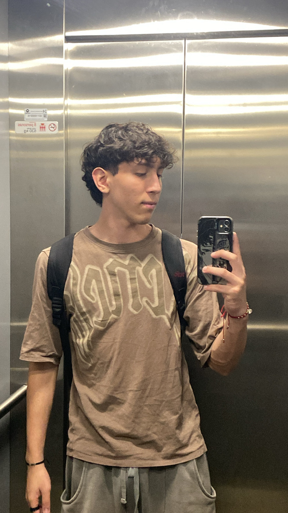

Perfil del Estudiante

Santiago Guerra Puertas
Programa Académico: Ingeniería de Sistemas y Computación
Universidad: Universidad Tecnológica de Pereira
Curso: Física 1
Programa Académico: Ingeniería de Sistemas y Computación
Universidad: Universidad Tecnológica de Pereira
Curso: Física 1
Implementación de tecnología NaviLens para mejorar la accesibilidad y el recorrido autoguiado en el Jardín Botánico de la Universidad Tecnológica de Pereira (UTP), integrando principios fundamentales de Física 1 en mecánica.
Los visitantes utilizan un mapa fotográfico para el recorrido, pero existe carencia de señalización numérica clara, complicando la navegación especialmente para visitantes principiantes.
Realizar una prueba piloto de adecuación de recorrido accesible usando códigos NaviLens. Visita NaviLens Oficial
Proyecto piloto con códigos gratuitos para centros de enseñanza, implementados en el Jardín Botánico de la UTP.
NaviLens constituye una señalética visual disruptiva que emplea marcadores de alto alcance especialmente diseñados para personas con discapacidad visual. Esta tecnología permite la detección rápida sin necesidad de enfoque preciso, funcionando a gran distancia (hasta 15 metros para códigos de 26 cm de tamaño).

Ejemplo de código NaviLens instalado en un jardín botánico
La tecnología de detección NaviLens cubre un ángulo de hasta 160 grados, utilizando principios trigonométricos para modelar la orientación espacial.

Diagrama de cálculo de dirección y ángulos en el sistema NaviLens
Jardín Botánico en miniatura en la Plaza de España de Águilas (Murcia). Demostró la viabilidad en entornos exteriores con vegetación densa.
Paseo Botánico de la Escuela Politécnica Superior de Orihuela (Alicante). Implementación completa en senderos para navegación inclusiva.

Sistema de navegación con realidad aumentada en NaviLens
Los estudios técnicos realizados en estas implementaciones han permitido optimizar parámetros como la altura de instalación de los códigos, el ángulo de inclinación óptimo respecto al suelo, y la distancia ideal entre marcadores consecutivos en un recorrido lineal tipo sendero.
Fecha de inicio del proyecto: 9/10/2025
Objetivo general: Desarrollar e implementar un sistema de códigos QR basados en tecnología Navilens para mejorar la accesibilidad y la experiencia informativa en el Jardín Botánico de la universidad, permitiendo a usuarios, incluyendo personas con discapacidad visual, obtener información detallada sobre plantas y áreas mediante escaneo de códigos.
En esta fase inicial, nos enfocamos en definir el alcance del proyecto, los objetivos específicos y los recursos necesarios. Comenzamos elaborando un documento detallado en Microsoft Word que incluía el planteamiento del problema (falta de accesibilidad en el Jardín Botánico), los beneficios de la tecnología Navilens (códigos QR accesibles que funcionan sin necesidad de enfoque preciso), el cronograma preliminar y un presupuesto estimado para materiales como impresiones y adhesivos.
Por solicitud, transferimos toda la información a una página web utilizando herramientas de HTML, CSS y JAVA SCRIPT.
Actividades clave:
Desafíos: Ajustar el plan inicial debido a limitaciones Económicas y de tiempo.
Resultados: página web completos, listos para revisión.
Duración: Aproximadamente 1 semana.
Fecha de finalización: 17/10/2025.
Esta etapa consistió en una ida de reconocimiento al Jardín Botánico para recopilar datos sobre posibles ubicaciones para los códigos QR. El objetivo era identificar puntos de interés como entradas, senderos, plantas emblemáticas y áreas de descanso, evaluando factores como visibilidad, accesibilidad y exposición a elementos climáticos.
Realizamos un recorrido por el Jardín, tomando notas y fotografías de cada sección. Consideramos aspectos como la distancia entre códigos para evitar sobrecarga y la integración estética para no alterar el entorno natural.
Actividades clave:
Desafíos: Clima variable que podría afectar la durabilidad de los materiales, necesidad de permisos de la administración del Jardín.
Resultados: Mapa detallado con ubicaciones seleccionadas y lista de requerimientos (tamaños de QR)
Duración: 2 semanas.
Fecha de finalización: 31/10/2025.
Collage de ubicaciones seleccionadas en el Jardín Botánico para la implementación de códigos NaviLens
Aquí nos familiarizamos con la tecnología Navilens mediante experimentos controlados. Comenzamos en un entorno interno (el galpón de la universidad) para probar la generación y escaneo de códigos QR Navilens
Posteriormente, trasladamos las pruebas al Jardín Botánico para simular condiciones reales, evaluando factores como iluminación natural, distancias de escaneo y compatibilidad con diferentes dispositivos. Generamos códigos prototipo que enlazaban a contenidos de prueba (Enlace a la pagina del proyecto).
Actividades clave:
Desafíos: Interferencias por reflejos solares en el escaneo; necesidad de ajustar tamaños de códigos.
Resultados: Confirmación de que Navilens funciona bien en exteriores; identificación de mejoras como nuevo material de impresión
Duración: 1 semana.
Fecha de finalización: 07/11/2025.
Como parte del proyecto de Física 1, se aplicaron los siguientes conceptos y ecuaciones para analizar la implementación de los códigos QR Navilens, incluyendo cálculos con datos realistas y errores estimados basados en mediciones experimentales.
Video de pruebas en el Jardín Botánico - Escaneo de códigos NaviLens en condiciones reales
En esta fase, procedimos a la producción y colocación física de los códigos QR. Investigamos materiales duraderos y resistentes al agua y al sol, optando por papel glossy laminado para mayor protección contra el clima. Imprimimos los códigos en una imprenta local, asegurándonos de que cada uno enlazara a contenidos específicos (información botánica, historia del Jardín, etc.) Por medio de un sistema de información enlazado con los Qr
Luego, pegamos los QR en las ubicaciones seleccionadas utilizando adhesivos resistentes (cinta doble cara industrial).
Actividades clave:
Desafíos: Coordinación con el personal del Jardín para conseguir permiso de pegarlos; costos de impresión ligeramente superiores a lo presupuestado.
Resultados: Todos los QR colocados exitosamente, cubriendo el 100% de las áreas planeadas.
Duración: 1 semana.
Fecha de finalización: 13/11/2025.
Video de implementación final - Instalación de códigos NaviLens en el Jardín Botánico
Finalmente, realizamos pruebas exhaustivas para validar la implementación completa. Esto incluyó recorridos simulados por el Jardín escaneando cada código, verificando la precisión de la información entregada y la funcionalidad en diferentes condiciones (día, tanto soleado como con lluvia (simulado).
Actividades clave:
Desafíos: Algunos códigos afectados por exposición inicial al clima, pues donde estaban forrados se empañaron por las fuertes lluvias de la noche.
Resultados: Sistema operativo al 100%, con correcciones aplicadas.
Duración: 10 días.
Fecha de finalización: 17/11/2025.
Usadas para verificar la estabilidad de los códigos QR colocados, asegurando que no se muevan o caigan.
Fórmulas:
Aplicación general:
En etapas de Implementación y Probación, se verificó ΣF = 0 y Στ = 0 para soportes, considerando fuerzas como gravedad, adhesión y viento. Los cálculos de torque se usaron para confirmar que el sistema permanecía en equilibrio, con errores propagados para estimar incertidumbre.